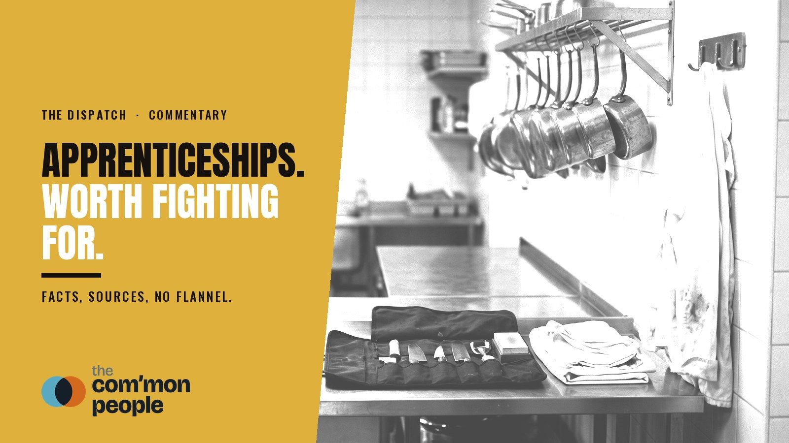

Why they matter for young people leaving school and college, the barriers that keep getting in the way, and the case for businesses doing the right thing, both commercially and for society. Figures cited. Opinions labelled as opinions.

This page is the short version. For the full report, with the history, the levy reforms in detail, the business case and the social dividend, all sourced across 18 references, read the dispatch: The Apprenticeship Paradox →
Apprenticeships in England are not disappearing. But as a route out of school, they are quietly shrinking, while the same programmes are increasingly used to train people already in work. That shift is the whole story, so it's worth seeing it in the figures.
Over the longer view it's starker. Analysis of Department for Education figures found that between 2015 and 2023, apprenticeship starts for under-19s fell by around 41% (almost 54,000 fewer), and starts for 19 to 24-year-olds fell by about 36% (roughly 55,000 fewer). The overall number holds up because older learners fill the gap. The young do not.
Not everyone learns best sitting exams, and not every good career starts with three years of debt. For a lot of young people leaving school at 16 or 18, or finishing college, an apprenticeship is one of the few routes that does four useful things at once.
You earn while you learn. A wage from day one, and no student loan hanging over the next thirty years.
You get a real employer and real work. Not a simulation of a job. The actual thing, with people who do it for a living.
It suits people who learn by doing. For hands-on learners, a workshop or an office teaches things a classroom never quite manages.
It opens careers that money and contacts used to gatekeep. You don't need a parent in the industry or a spare year of unpaid work to get a foot in.
Government figures report that around 94% of apprentices who complete go on to work or further training, and roughly 93% stay in sustained employment. Finishing an apprenticeship is not a guarantee of anything (nothing is), but as a starting point for a working life, the odds are good. Source: OneFile analysis of DfE destinations data, 2024.
Young people want these places. Plenty of businesses would offer them. The friction sits in the system between the two, and most of it is fixable.
The apprenticeship levy works best for large firms with big payrolls and HR teams. The small and medium employers where most young people would take a first job find it complex to navigate, and the money doesn't flow to them as easily.
Schools are largely judged on how many pupils go on to higher education, not on apprenticeship starts. So the apprenticeship route gets a fraction of the airtime in the assembly hall, even when it's the better fit for the pupil in front of you.
Research with SMEs found the system is seen as complex and time-consuming. One employer described a six-year journey just to understand it and access the right support. Frequent policy changes make it harder to plan. Source: Education Development Trust.
Level 2 apprenticeship starts recently hit a four-year low. Those are the foundation places a sixteen-year-old with no experience steps onto first. Take them away and you don't make apprenticeships more prestigious, you just make them harder to start. Source: FE Week.
The national achievement rate rose to 65.4% in 2024/25, a real improvement, but still below the government's own 67% target. A third of apprentices not completing is a lot of stalled starts. Source: FE Week / DfE.
Low first-year wages, travel costs and where the placements happen to be can quietly lock out the young people who'd benefit most: the ones without a car, savings, or a placement on the bus route.
From April 2026 the Apprenticeship Levy is being replaced, in phases, by a broader Growth and Skills Levy. The aim is to let the funding cover more than full apprenticeships: short and modular courses and targeted upskilling too, with a stated focus on areas like engineering and AI. What it means for you depends a lot on the size of your business.
The clear winners. For apprentices under 25, the government now covers 100% of training costs, the 5% you used to chip in has gone. It has never been cheaper to take on a young apprentice.
More choice in what the funding can buy, beyond full apprenticeships. And a new set of foundation apprenticeships (Level 2, ages 16 to 21), launched in 2025, gives you a lower-risk way to bring someone young in and grow them.
More flexibility, but tighter rules. Funds now expire after 12 months (down from 24), your contribution on spend beyond your balance rises to 25% (from 5%), the monthly top-up is being withdrawn, and Level 7 (master's-level) apprenticeships for over-22s are no longer levy-funded from January 2026.
For a small firm taking on a young apprentice, this is about as good as it has been. For big levy-payers who used to let unused funds sit, the squeeze is real: shorter windows, a bigger own-contribution and no top-up. The direction of travel is plain: spend it on training, ideally on the young, or lose it. Sources: Grant Thornton, 2026; Dept for Education, Budget 2025 Growth and Skills Levy guidance.
This is the part that gets framed as charity, and it isn't. Taking on an apprentice is one of the few decisions a firm can make that pays off on the balance sheet and in the community at the same time.
You grow your own talent to fit how you actually work. Apprentices you train tend to stay, which lifts retention and cuts the cost of hiring. You fill the skills gaps you keep complaining about, from the bottom up, instead of bidding against everyone else for the finished article.
Every place you offer an eighteen-year-old is a debt avoided, a career begun, and a bit of the ladder put back for someone who couldn't otherwise reach it. Multiply that across a town and it's the difference between a place that keeps its young people and one that exports them.
An apprentice is not free labour, and treating one that way is how you get the six-in-ten completion rate. It's a real commitment: proper mentoring, time from someone senior, a fair wage, and actual work to do. Done well it repays that many times over. Done badly it wastes a young person's year, and that matters more than the money.
The fixes are known. Some sit with government, some with schools, and a good chunk sits with employers who could simply decide to do it.
In the 2025 Budget the government removed the 5% co-investment that small employers had to pay towards training, for apprentices under 25. A small sum on paper, but a real barrier for a firm on tight margins, and taking it away makes saying yes to a young apprentice easier. More of this, please. Source: FE Week, Budget 2025.
Figures cited. Opinions labelled as opinions.